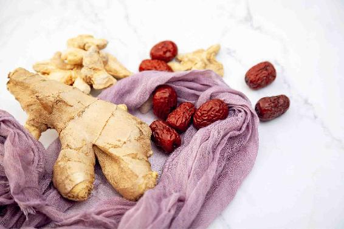
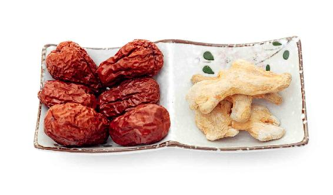

每年夏季三伏之前，我都会在微信和微博提醒朋友们贴三伏贴，有一年刚交夏至节气，我就收到了一些朋友们的留言：“老师，今年你怎么没有提醒我们贴三伏贴啊？是不是已经错过了入伏的日期了？现在还能贴三伏贴吗？”
我查了一下才发现，原来是那几天微信朋友圈流传一个帖子，说今天入伏了，要贴三伏贴了，所以就害得这些朋友们特别慌张，以为自己错过入伏的日期了。
我在书里写过，“夏至三庚才数伏”，也就是说，在交夏至节气之后，要数到第三个庚日，才是三伏的第一天。
中国的农历是用十天干计日，甲乙丙丁戊己庚辛壬癸，每个天干对应一天，每隔十天天干才会轮换一次。假设在交夏至节气之后，马上就是一个庚日，那么，就要数到第三个庚日才是入伏，也就是说，最快也要在夏至节气之后二十天，才有可能入伏。
如果您在微信朋友圈里看到一篇文章，文章的标题写着“今天入伏”，或者今天怎么怎么了，那您要先看一下这篇文章是不是原创文章，发表的日期是哪一天，因为当您看到这篇文章的时候，它有可能早就过了当天的日期了，甚至有可能是以前的一些旧文章被人传抄的，抄着抄着就走样了。

立夏喝姜枣茶是我在2007年提出来的，当时还没有微博和微信，我是在博客上发表的文章。自从我推荐立夏喝姜枣茶这个方法后，有很多的朋友食用后都收到了很好的效果。
现在市面上，很多姜枣茶的产品非常流行，但我要特别提醒一下朋友们：喝姜枣茶，第一，看里面用的是去皮生姜还是带皮生姜。第二，看里面加了多少糖。很多年轻人感觉市面姜枣茶比家里妈妈煮的好喝，其实是在喝糖水。第三，身体有寒的时候喝，不限季节；如果是每天定时定量喝来保健，一般人不需要全年喝。
姜枣茶并不适合整个夏季都喝，对于普通体质的人来说，夏天的前两个月是最适合的，而入伏之后，就不适合再喝姜枣茶了。
不管姜枣茶有多么神奇的功效，只有顺应了天时来喝它，才有很好的效果，一旦气候条件变化了，我们也要顺时而变。
每一年气候不同，有的年份燥热之气比较重，有的年份寒湿之气比较重。喝姜枣茶可以相应调整。
夏至是一个转折点。特别是有些年份天气热得早，夏至已经有暑天的感觉。到了夏至，可以上午喝姜枣茶，下午喝金银花甘草茶。还可以适当变化一下姜枣茶的配方，如果感觉湿热重，加一个罗汉果；如果感觉火气重，可以加绿茶。
还是按照姜枣茶以前的做法，姜、枣煮上10分钟以上，最好是40分钟，把水过滤出来，冲泡绿茶，这样可以平衡一下姜枣茶的热性。
读者评论：喝了姜枣茶，整个人神清气爽
南方：喝了两个多月的姜枣茶，人瘦了，睡眠也好了，整个人神清气爽。
英子：我自从喝了姜枣茶，重了4斤（2千克），好开心。我老公以前老说我是白吃的。
北极星：以前我动不动就出大汗，自从喝了一段时间姜枣茶后就不容易出汗了。
落英缤纷：姜枣茶确实有效果，坚持喝了半个多月，大便规律了，肚子不胀了，体重轻了5斤（2.5千克）。
格桑雅珠：我喝了三个多月的姜枣茶，痛经缓解了好多。
wei：我儿子有鼻炎，经常打喷嚏。立夏开始，他坚持每天早上一杯姜枣茶，两个多月后不打喷嚏了。
文：每年夏天，我手脚上都会起水泡。今年喝了一段时间姜枣茶后，手脚上都没起水泡，太感谢允斌老师了!
静致远：一直在喝姜枣茶，之前眼睛模糊看不清、脑子思路不清晰，现在很好了，精神很足。
燕双：我胃下垂5厘米，从立夏到三伏每天早上煲姜枣茶，一段时候后胃竟提起来了。
允斌解惑：糖尿病患者也可以喝姜枣茶
南方：糖尿病患者可以喝姜枣茶吗？
允斌：可以。
气血虚的女性喝姜枣茶是可以加红糖的，因为红糖能增强暖血补血的功效，对于女性的痛经也有帮助，还可以调理女性手脚冰冷、月经推迟等症状，这是姜枣红糖茶的功效。但有时候，某些年往往比较燥热，我建议您把红糖改成蜂蜜，用蜂蜜来润一下。
姜枣茶加上蜂蜜有什么效果呢？其实也有滋养气血的效果，但它不暖血。生理期的女性，建议您还是加红糖，在其他时间，您可以用蜂蜜。
对于孕妇来说，用蜂蜜也是一个不错的选择。在孕晚期的女性就不要喝姜枣茶了，而在孕中期的女性，如果您觉得姜枣茶适合您的体质，是可以稍微喝一点儿的。

第一，小孩子胃口不好，姜枣茶里加麦芽糖。
肠胃不好的小孩子，可以在姜枣茶里加上麦芽糖做成姜枣饴糖水。这样就成了一个改善脾胃功能的小茶饮。
如果小孩子面黄肌瘦，胃口不佳，还老喊肚子痛，可以在喝姜枣茶的时候加一点麦芽糖，改善他的脾胃功能。
当然，姜枣茶（加麦芽糖）并不适合所有的小孩子，只有经常肚子痛、肚子里有寒气、爱吃冷饮,或是比较瘦弱、胃口不佳的小孩子，可以用姜枣茶来调理。
第二，幼儿如果身体好，没必要天天喝姜枣茶。
如果孩子比较小，而且身体本身很好，是没有必要天天喝姜枣茶的，这样反而会使孩子上火。
有一位朋友说他曾经过度吹空调，导致两只胳膊都很凉，后来连风扇都不能吹了，但他在喝了我推荐的姜枣茶一个月后就都好了。
还有一位朋友说他以前不怎么出汗，喝了姜枣茶后就出汗了，觉得很舒服。
类似有这种情况的朋友，如果体内寒湿比较重，喝姜枣茶可以加7粒花椒一起煮。
一些平时内热就比较重的朋友，您在这个时候如果喝姜枣茶感觉上火，可以停止喝姜枣茶，改喝银花甘草茶，也就是把金银花和甘草一起用水冲泡。
总之，养生的一个大原则必须要遵循规律，那就是随时随地跟随天地之气的变化来走，这样不容易出错。